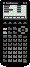
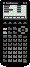

1


2

3

4

5

6

7

8

9

10

11

12

TI-86 Link Protocol Guide v1.0 - System Backup Transfers
A System Backup is one large transmission containing all user-modifiable data in the calculator. The TI-86 Graph Link software does not support backups, so there is no standard backup file format. As of November 2000, only FastLink supports the TI-86's backup capability. The proprietary file format it uses can be found in the file formats section of this documentation.
The protocol for all system backup transfers is shown below. For information on packet formats, click here.
A computer can be either the sending unit or the receiving unit.
| Step | Direction | Packet | ||
|---|---|---|---|---|
|
1 |
 |
|
|
VAR with backup-style header and type ID = 0x1D. |
|
2 |
|
ACK | ||
|
3 |
|
CTS or SKIP/EXIT. If exit, do step 4 and quit. | ||
|
4 |
|
ACK | ||
|
5 |
|
DATA - section 1 (system data) | ||
|
6 |
|
ACK | ||
|
7 |
|
DATA - section 2 (user data <=64K) | ||
|
8 |
|
ACK | ||
|
9 |
|
DATA - section 3 (user data >64K - see note below) | ||
|
10 |
|
ACK (see note below) | ||
|
11 |
|
DATA - section 4 (variable table) | ||
|
12 |
|
ACK | ||
Example (PC sending backup to TI): backup in '4 parts'
| PC: | 06 06 09 00 8C 36 1D FF FF 15 01 41 01 4C 00 | Variable header: Backup |
| TI: | 86 56 09 00 | Acknowledgement of header |
| 86 09 09 00 | Clear to send backup | |
| PC: | 06 56 00 00 | Acknowledgement of CTS |
| 06 15 8C 36 <368Ch bytes of data plus checksum> | Backup data section 1 (system data) | |
| TI: | 86 56 00 00 | Acknowledgement of data |
| PC: | 06 15 FF FF <FFFFh bytes of data plus checksum> | Backup data section 2 (user data <=64K) |
| TI: | 86 56 00 00 | Acknowledgement of data |
| PC: | 06 15 15 01 <115h bytes of data plus checksum> | Backup data section 3 (user data >64K) |
| TI: | 86 56 00 00 | Acknowledgement of data |
| PC: | 06 15 41 01 <141h bytes of data plus checksum> | Backup data section 4 (variable table) |
| TI: | 86 56 00 00 | Acknowledgement of data |
Example (PC sending backup to TI): backup in '3 parts'
| PC: | 06 06 09 00 8C 36 1D 01 20 00 00 3F 00 3E 01 | Variable header: Backup |
| TI: | 86 56 09 00 | Acknowledgement of header |
| 86 09 09 00 | Clear to send backup | |
| PC: | 06 56 00 00 | Acknowledgement of CTS |
| 06 15 8C 36 <368Ch bytes of data plus checksum> | Backup data section 1 (system data) | |
| TI: | 86 56 00 00 | Acknowledgement of data |
| PC: | 06 15 20 00 <2000h bytes of data plus checksum> | Backup data section 2 (user data <64K) |
| TI: | 86 56 00 00 | Acknowledgement of data |
| PC: | 06 15 3F 00 <3F00h bytes of data plus checksum> | Backup data section 4 (variable table) |
| TI: | 86 56 00 00 | Acknowledgement of data |